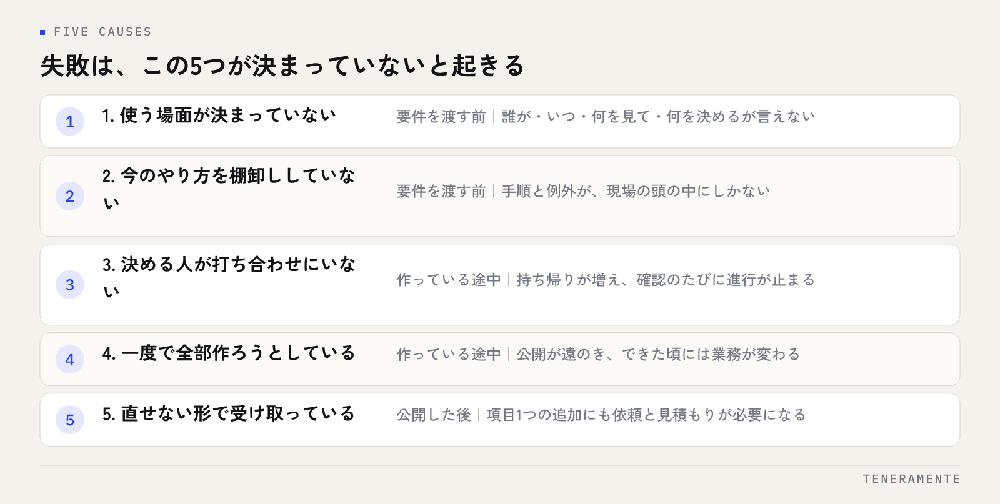

業務アプリ開発が失敗する原因は、技術の難しさよりも手前にあります。結論から申し上げると、失敗のほとんどは発注する側で決まっていなかったことが、作り始めてから表に出てきた結果です。使う場面、今のやり方、決める人、直す人。この4つが曖昧なまま進むと、動くけれど誰も使わないアプリが残ります。この記事では、失敗が起きる場所を3つの段階に分け、発注する前に決めておく項目を具体的に並べます。
📌 この記事の結論
業務アプリ開発で最初に決めるのは機能ではありません。誰のどの作業を、いつ置き換えるのかです。この1文が言えていれば、機能の取捨も費用の判断も後からできます。言えないまま要件を渡すと、作る側は推測で埋めるしかなく、公開してから作り直しになります。
01業務アプリ開発の失敗は、作る側ではなく決める側で起きる
「開発が失敗した」と言われる案件を分解すると、プログラムが動かなかったという例はほとんどありません。動いています。使われていないのです。
使われないアプリには共通点があります。入力する人が、今までのやり方より手間が増えていることです。たとえば、これまで紙の伝票に3項目だけ書いて事務所に回していた作業が、アプリでは10項目の入力になっている。現場は紙に戻り、アプリには誰も入れなくなります。この結果だけを見ると開発会社の設計ミスに見えますが、原因は手前にあります。発注した側が「今は何項目書いているのか」を伝えていなかったのです。
発注する側に悪意があるわけではありません。毎日やっている作業は、言葉にする機会がないだけです。だからこそ、言葉にする工程を発注前に置く必要があります。作る前に決めることのほとんどは、業務の側にあります。
02失敗の原因は、発注側の5つの未決定に行き着く
実際の相談で出てくる「うまくいかなかった」の中身をたどると、だいたい次の5つのどれかに行き着きます。

一つ目は、使う場面が決まっていないこと。二つ目は、今のやり方が言葉になっていないこと。三つ目は、決める人が打ち合わせに出ていないこと。四つ目は、一度で全部作ろうとしていること。五つ目は、公開した後に誰も直せない形で受け取っていることです。
この5つは、起きる時期がきれいに分かれます。一つ目と二つ目は要件を渡す前、三つ目と四つ目は作っている途中、五つ目は公開した後です。どの段階でつまずきやすいかは会社によって違うので、自社がどこに弱いのかを先に見てください。
03要件を渡す前の失敗：使う場面と、今のやり方が決まっていない
「便利な仕組み」のまま頼んでしまう
相談の冒頭で多いのが、「社内の情報を一元管理したい」「営業の数字が見えるようにしたい」という形の依頼です。目的としては正しいのですが、このままでは作れません。一元管理という言葉は、見る人によって指す範囲がまったく違うからです。
必要なのは、場面に落とすことです。誰が、いつ、どこで、何を見て、何を決めるのか。「月初に店長が、先月の受注件数を担当者ごとに見て、面談の順番を決める」まで言えれば、作る側はその画面から設計できます。逆にここが曖昧だと、見栄えのよい集計画面ができて、誰も開かないという結果になります。
今のやり方を棚卸ししていない
もう一つは、現状の手順が共有されないまま要件が渡されるケースです。業務は例外でできています。通常はこの流れ、ただし急ぎのときは電話で先に通す、特定の取引先だけ書式が違う。こうした分岐は、現場の人の頭の中にしかありません。
棚卸しは、完璧な図を描く必要はありません。1つの業務について、始まりと終わり、途中で紙やメールに姿を変える場所、例外の扱いを並べるだけで十分です。やり方は業務フロー図の書き方にまとめています。この作業を発注前にやっておくと、見積もりの精度も、打ち合わせの中身もまったく変わります。
04作っている途中の失敗：決める人の不在と、一度で全部
決める人が打ち合わせに出ていない
進行が止まる最大の原因は、持ち帰りです。打ち合わせに出ているのが担当者だけで、決定権が別の人にあると、1つの確認に1週間かかります。確認のたびに止まるので、気づいたときには当初の予定を大きく過ぎています。
対策は単純で、決める人を1人決めて打ち合わせに入れることです。全員が毎回出る必要はありません。その場で「これで進めます」と言える人が、画面の形を決める回だけ同席していれば足ります。打ち合わせで何を決めるのかの整理は小さな会社の要件定義が参考になります。
一度で全部作ろうとする
もう一つは、範囲を広げすぎることです。せっかく作るのだから勤怠も請求も在庫も、という話になりがちですが、同時に作ると公開が遠のきます。公開が遅れると、作っている間に業務が変わり、できたときには合わなくなっています。
順番の付け方は「毎日発生して、手で転記している作業」からです。頻度が高く、転記が多い作業ほど、置き換えたときの効果が現場に伝わります。最初の範囲が小さければ、使ってみてから次を決められます。
05公開した後の失敗：直せない形で受け取っている
公開して半年後に止まる案件もあります。原因は、変更できない形で受け取っていることです。
よくあるのは、次の3つです。項目を1つ足すだけでも開発会社に依頼が必要で、そのたびに見積もりが出る。データが取り出せず、他のサービスに移れない。作った会社しか中身が分からず、相談先が1社に固定されている。どれも契約の段階で確認しておけば避けられます。
確認すべきことは具体的です。ソースコードとデータの権利は誰のものか。公開後の修正はどういう費用の形か。データはCSVなどで取り出せるか。サーバーやドメインの契約は自社名義か。これらは技術の話ではなく取り決めの話なので、発注前に聞いて構いません。むしろ、聞いたときの答え方で相手の姿勢が分かります。
06発注する側が最初に決めておくこと
ここまでの内容を、決める順番に並べます。この6項目が埋まっていれば、見積もりの比較ができる状態になります。
| 決めること | 決まっていないと起きること | 決め方の目安 |
|---|---|---|
| 対象の業務を1つに絞る | 範囲が広がり、公開が遠のく | 毎日発生し、手で転記している作業から選ぶ |
| 使う人と使う場面 | 誰も開かない画面ができる | 「誰が・いつ・何を見て・何を決める」の形で1文にする |
| 今のやり方と例外 | 作った後に手戻りが出る | 始まり・終わり・紙やメールに変わる場所・例外を並べる |
| 決める人 | 確認のたびに進行が止まる | その場で決められる人を1人決め、打ち合わせに入れる |
| 公開の時期と第一段の範囲 | 全部入りになり、業務の変化に追い越される | 最初に出す範囲を決め、残りは使ってから判断する |
| 公開後の直し方 | 項目1つの追加に毎回見積もりが出る | 権利・修正費用の形・データの取り出し方を発注前に確認する |
発注前のチェックリストとしては、次の項目を見てください。
- 対象の業務を1つ挙げ、その業務の1日の件数を言える
- その業務を実際にやっている人の名前を挙げられる
- 今の手順を、紙・メール・表計算ソフトの単位で説明できる
- 例外の扱いを3つ以上挙げられる
- アプリで置き換える範囲と、手作業で残す範囲を分けられる
- 第一段を公開したい時期を決めている
- 公開後に項目を足すときの進め方を、相手に確認した
- データの取り出し方と、ソースコードの権利を確認した
すべて埋まらなくても相談はできます。ただ、埋まっていない項目があるなら、それを打ち合わせの議題として先に出してください。相談準備の詳しい手順はAIツール開発を依頼する前に決めておく7つのことにも整理しています。
07よくある失敗と、その避け方
機能一覧から話を始める。機能の表を作って見積もりを取ると、金額は出ますが使われるかどうかは分かりません。先に使う場面を1文にしてください。
現場に見せるのを公開直前にする。入力する人が初めて触るのが公開日だと、手間が増えていることに気づくのが遅すぎます。途中で一度、実際に入力してもらってください。
既存の帳票をそのまま画面にする。紙の都合でできた項目が、そのまま入力の手間として残ります。何のために書いている項目なのかを1つずつ確かめ、使われていない項目は落とします。
例外を後回しにする。例外は必ず出てきます。最初に挙げておけば、アプリで扱うか手作業で残すかを選べますが、後から出ると設計の作り直しになります。
公開したら終わりだと考える。業務は変わります。項目や区分の名前を自社で変えられる形にしておくと、小さな変化で止まりません。
2社の見積もりを総額だけで比べる。含まれている範囲が違えば総額は比べられません。内訳の項目をそろえてから比較してください。見方はアプリ開発の見積書の見方にまとめています。
08自分で進める場合と、専門家に任せる場合の分かれ目
一般論として、判断の基準は3つです。
一つ目は、業務を言葉にする作業を社内でやれるかどうかです。ここは外に出しにくい部分です。毎日の手順と例外を知っているのは現場の人だけなので、聞き取りを手伝ってもらうことはできても、中身を代わりに作ることはできません。この作業に手が回らない状態なら、まず整理の段階から一緒に進める相手を探すほうが結果が早く出ます。
二つ目は、公開した後に直し続けられるかどうかです。作るところまでは外に出しても構いませんが、項目名の変更や区分の追加が毎回依頼になると、小さな変化で止まります。社内で触れる範囲をどこまでにするかを、発注の段階で決めてください。自分たちで触れる形を望むなら、その前提で相談する必要があります。
三つ目は、止まったときに困る度合いです。業務の中心に入る仕組みなら、動かなくなったときに誰に連絡すれば直るのかが決まっている必要があります。趣味の範囲で試すものと、毎日の売上に関わるものでは、任せ方を変えるのが自然です。
迷うときは、対象の業務を1つに絞って相談するところから始めてください。範囲が小さければ、自社でやれることとやれないことが具体的な作業として見えてきます。
09よくある質問
要件が固まっていない段階でも相談してよいですか？
既製のサービスで足りるかどうかは、どう判断しますか？
社内に詳しい人がいません。それでも発注できますか？
作ったアプリを使ってもらうには、どうすればよいですか？
途中で仕様を変えたくなったら、どうなりますか？
10まとめ：決める側の準備が、開発の成否を分ける
業務アプリ開発で失敗を避ける方法は、技術の選定ではありません。対象の業務を1つに絞り、使う場面を1文で言い、今のやり方と例外を並べ、決める人を1人置き、第一段の範囲と公開後の直し方を決める。この6つが埋まっていれば、どの相談先と進めても大きく外れません。
逆に、機能一覧から話を始め、現場に見せるのを公開直前にし、例外を後回しにすると、動くけれど使われないアプリが残ります。作る工程より前に、決める工程があることを忘れないでください。
TENERAMENTEなら、この記事で挙げた「業務を言葉にする」段階から一緒に入り、対象業務の棚卸しと例外の洗い出しを打ち合わせの中で形にしてから、第一段の範囲を決めて開発に進みます。公開後に項目や区分を自社で変えられる形で引き渡すので、業務が変わるたびに依頼と見積もりを待つ必要がなくなります。進め方と費用の考え方は業務改善AIアプリ開発にまとめていますので、まだ要件が固まっていない段階でも、お問い合わせからお気軽にご相談ください。